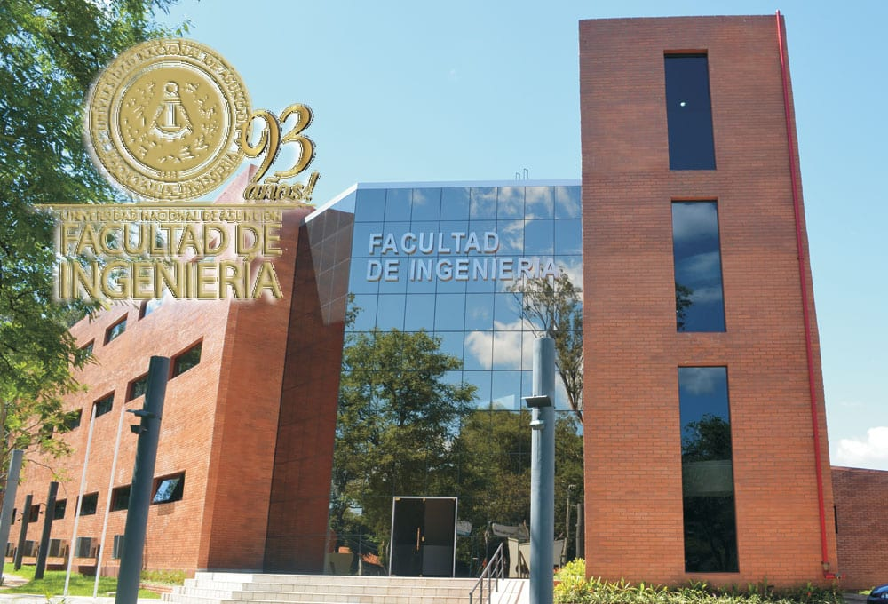
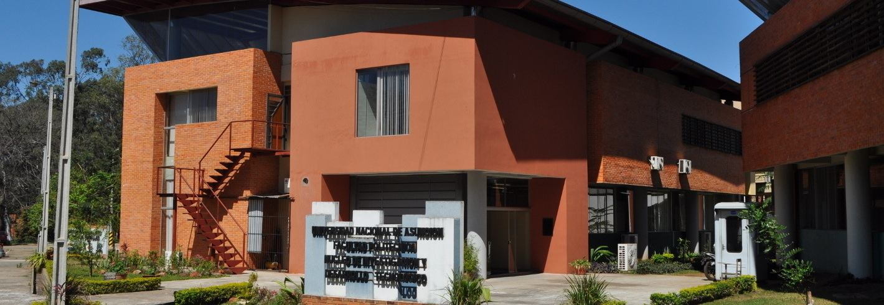
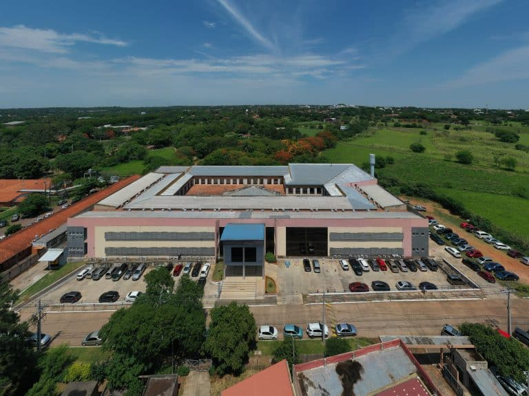
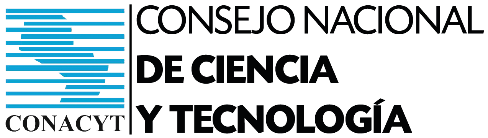
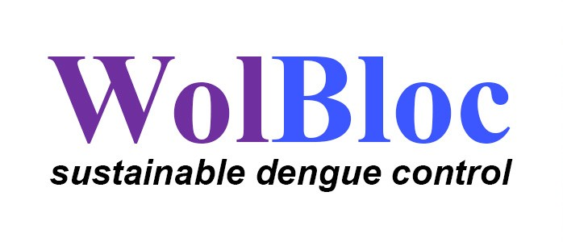
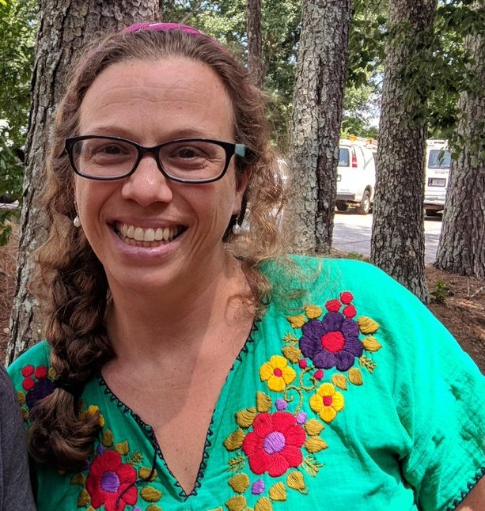
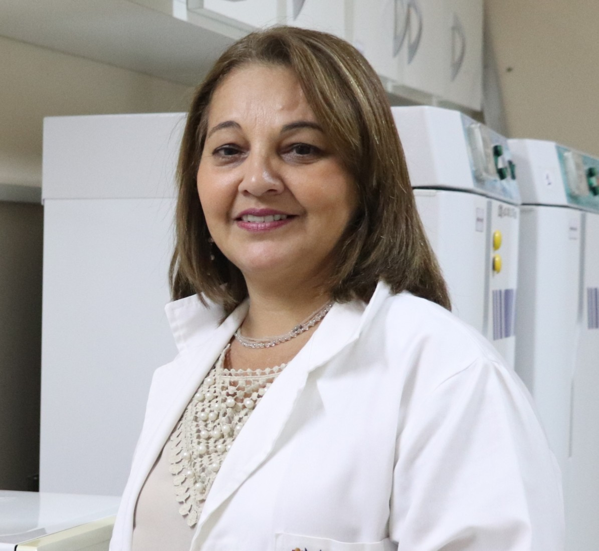

La Epidemia de Dengue en Paraguay
El dengue es una enfermedad viral transmitida por el mosquito Aedes aegypti que representa uno de los mayores desafíos de salud pública en Paraguay desde hace décadas. El país sufre brotes anuales de alta intensidad, con picos epidemiológicos que colapsan el sistema sanitario y generan miles de hospitalizaciones, pérdidas económicas y, en los casos más graves, muertes.
Paraguay se ubica sistemáticamente entre los países de mayor incidencia de dengue en América Latina. Las condiciones climáticas tropicales y subtropicales, la urbanización acelerada y la presencia de criaderos en zonas de alta densidad poblacional crean un entorno propicio para la proliferación del vector.
Las herramientas de control tradicionales—fumigaciones, eliminación de críaderos y campañas de concientización—han resultado insuficientes para detener la reemergencia cíclica del dengue. Esto motiva la búsqueda de estrategias innovadoras y de mayor alcance para contener la dispersión del vector.
El Proyecto Wolbachia en Paraguay
Wolbachia es una bacteria endosimbiótica que infecta naturalmente a muchos insectos. Cuando se introduce en Ae. aegypti, reduce drásticamente la capacidad del mosquito de transmitir el dengue, el zika, el chikungunya y la fiebre amarilla. La técnica—desarrollada por el World Mosquito Program—no utiliza insecticidas ni modifica genéticamente al insecto: trabaja con la biología natural del vector.
En Paraguay, el Proyecto Wolbachia Paraguay (wolbachiaparaguay.org) busca implementar esta estrategia a escala nacional, liberando mosquitos portadores de Wolbachia en áreas seleccionadas de alta incidencia. Es la primera implementación de este tipo en el país y representa una de las apuestas más prometedoras para el control sostenible del dengue.
¿Qué es la Incompatibilidad Citoplasmática (IC)?
Cuando un macho portador de Wolbachia se aparea con una hembra no infectada, los huevos no eclosionan—son invíables. Esto se conoce como incompatibilidad citoplasmática. Sin embargo, una hembra infectada puede aparearse tanto con machos infectados como no infectados, y sus crías heredan la bacteria. Este mecanismo genera una ventaja reproductiva selectiva que permite que Wolbachia se propague naturalmente en la población silvestre.
Con el tiempo, la bacteria se establece en la población local de Ae. aegypti, reduciendo permanentemente su capacidad vectorial sin necesidad de nuevas liberaciones masivas.
¿Cómo funciona la estrategia?
Crianza controlada
Se crían mosquitos Ae. aegypti portadores de Wolbachia en biofactorías especializadas bajo condiciones controladas.
Liberación planificada
Se liberan mosquitos infectados en áreas urbanas de alta densidad de dengue, siguiendo planes espaciales basados en datos epidemiológicos.
Establecimiento natural
Gracias a la IC, Wolbachia se autopropaga por apareamiento, estableciéndose progresivamente en la población silvestre.
Reducción vectorial
La bacteria bloquea la replicación viral dentro del mosquito, reduciendo la transmisión de dengue en las áreas de intervención.
El Aporte Tecnológico de Esta Tesis
La estimación de poblaciones de mosquitos es una tarea extremadamente compleja. La dinámica espacial y temporal de Ae. aegypti en entornos urbanos depende de múltiples factores: estructura del hábitat, presencia de sitios de cría, condiciones climáticas y comportamientos de dispersión. Construir modelos precisos requiere datos cuantitativos de alta resolución—datos que, en la práctica, son muy difíciles y costosos de adquirir.
El monitoreo tradicional basado en trampas de captura anotadas manualmente genera información lenta, localizada y propensa a error humano. Esto limita severamente la capacidad de construir estimaciones espacio-temporales confiables para la toma de decisiones estratégicas en programas de control vectorial.
En este marco, nuestra tesis contribuye en dos aristas fundamentales:
Automatización y Adquisición de Datos
Diseño e implementación de una trampa inteligente basada en visión computacional e inteligencia artificial embebida. El sistema detecta, cuenta y clasifica automáticamente los mosquitos capturados, transmitiendo datos en tiempo real a la nube sin intervención humana. Esto permite generar series temporales densas y georreferenciadas de capturas, facilitando la calibración de modelos de dinámica poblacional.
Modelado y Simulación de Escenarios
Propuesta de un modelo basado en agentes (ABM) que simula la dispersión de Ae. aegypti en entornos urbanos georreferenciados. El modelo permite explorar escenarios estratégicos—como el impacto de diferentes configuraciones de sitios de cría o la cobertura óptima de liberaciones Wolbachia— apoyando la toma de decisiones basada en evidencia en el proyecto de control vectorial.
Organizaciones que Respaldan la Tesis

Facultad de Ingeniería
Universidad Nacional de Asunción
Casa de estudios de los autores de la tesis. Brinda el marco académico, infraestructura y orientación científica para el desarrollo del proyecto.

Núcleo de Investigación y Desarrollo Tecnológico
Centro de investigación aplicada de la Facultad Politécnica de la Universidad Nacional de Asunción, cuya misión es impulsar la investigación científica y tecnológica para generar soluciones innovadoras con impacto nacional e internacional.

Instituto de Investigaciones en Ciencias de la Salud
Organismo dependiente de la UNA especializado en investigación biomédica y epidemiológica. Proporciona el marco epidemiológico y acceso a datos de campo sobre poblaciones de mosquitos en Paraguay.
Tesis Anteriores en la FIUNA sobre el Tema
Este trabajo se inscribe en una línea de investigación acumulativa desarrollada en la Facultad de Ingeniería de la UNA. Las siguientes tesis constituyen las bases sobre las que este proyecto innova y extiende sus alcances.
Agradecimientos y Financiamiento
Esta investigación no habría sido posible sin el apoyo institucional, financiero y científico de las siguientes organizaciones y personas.

CONACYT Paraguay
En el marco del proyecto FEEI‑CONACYT‑PROCIENCIA — ESTR01‑23 ARASY

Consortium Wolbloc — Wellcome Trust
Project No. 226166 / Z / 22 / Z

Dra. Claudia Pio Ferreira
IBB — Departamento de Bioestadística — UNESP Botucatu, SP, Brasil

Dra. Nilsa Gómez
Instituto de Investigaciones en Ciencias de la Salud (IICS) — Asunción, Paraguay